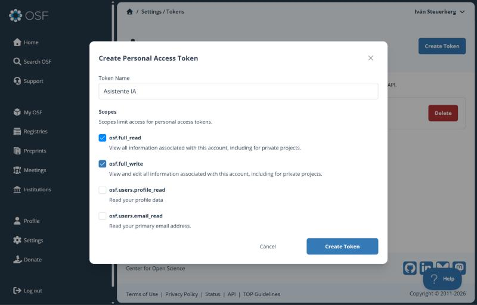

Sistemas de Información de Gestión y BI
Automatizar OSF
con un asistente de IA
Iván Rodríguez Steuerberg · Octubre de 2026
El problema
- Subir cada documento a mano cada vez que cambia.
- Copias con fecha en el nombre:
memoria_v3_final_bueno.pdf
- Un índice que nadie actualiza.
- Varios ordenadores y versiones que no coinciden.
La idea
Tus documentos
→
Asistente de IA
→
OSF
- Sube siempre con el mismo nombre: OSF guarda las versiones anteriores solo.
- Solo sube lo que ha cambiado.
- Mantiene un índice en la wiki con fechas y versiones.
Cómo organices las carpetas es cosa tuya.
1 · Crear el token
- OSF → Settings → Personal access tokens → Create Token.
- Permisos:
osf.full_read y osf.full_write. Nada más.
- Copia el token al crearlo: OSF no lo vuelve a enseñar.

2 · Guardarlo bien
En la carpeta de tus documentos, un archivo llamado .env con una línea:
OSF_TOKEN=tu-token
Nunca lo pegues en un chat ni lo subas a GitHub. Si se filtra, bórralo en OSF y crea otro.
3 · El prompt maestro
- Identificador del proyecto: los 5 caracteres de
osf.io/xxxxx.
- Copia el prompt de
docs/guia-osf/prompt-maestro.md en GitHub (repositorio smart-basket).
- Pégalo en un asistente que pueda trabajar en tu ordenador (Claude Code, Antigravity…).
El asistente primero solo lee, luego simula y solo sube cuando le dices que sí.
En el día a día
«Publica mis documentos en OSF»
«Actualiza el índice de la wiki de OSF»
Y nada más. El historial de versiones queda en OSF.
Lo que gano
- Cero subidas a mano.
- Todas las versiones guardadas.
- Un índice siempre al día.
- Permisos mínimos y token fuera del chat.
- El asistente pide permiso antes de tocar OSF.
- Funciona desde cualquier ordenador.
¿Preguntas?